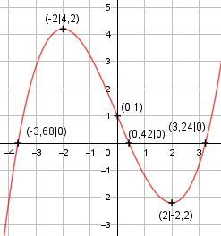

Aufgabe 22 f(x) = 0,2x3 - 2,4x + 1 f'(x) = 0,6x2 - 2,4, f''(x) = 1,2x, f'''(x) = 1,2 Definitionsbereich: -∞ < x < ∞ Wertebereich: -∞ < f(x) < ∞ Asymptoten: - Symmetrie: - Nullstellen: Wertetabelle: -4 -3 -2 -1 0 1 -2,2 2,8 4,2 3,2 1 -1,2 2 3 4 -2,2 -0,8 4,2 Vorzeichenwechsel zwischen -4 und -3 --> gewählt x01 = - 3,44 Vorzeichenwechsel zwischen 0 und 1 --> gewählt x02 = 0,45 Vorzeichenwechsel zwischen 3 und 4 --> gewählt x03 = 3,16 Newtonsches Näherungsverfahren: f(-3,44) x01 = -3,44 - ---------- = f'(-3,44) 0,2 * (-3,44)3 - 2,4 * (-3,44) + 1 = -3,44 - ------------------------------------ 0,6 * (-3,44)2 - 2,4 x1 = 3,44 - 0,24 = -3,68 f(0,45) x2 = 0,45 - --------- = f'(0,45) 0,2 * 0,453 - 2,4 * 0,45 + 1 = 0,45 - ------------------------------ 0,6 * 0,452 - 2,4 x2 = 0,45 - 0,03 = 0,42 f(3,16) x3 = 3,16 - --------- = f'(3,16) 0,2 * 3,163 - 2,4 * 3,16 + 1 = 3,16 - ------------------------------ 0,6 * 3,162 - 2,4 x3 = 3,16 + 0,08 = 3,24 N1(-3,68|0), N2(0,42|0), N3(3,24|0) Schnittpunkt mit der y-Achse: f(0) = 0,2 * 03 - 2,4 * 0 + 1 = 1 Sy(0|1) Extrempunkte: 0,6x2 - 2,4 = 0 | +2,4 0,6x2 = 2,4 | :6 x2 = 4 x1,2 = ± 2, f(2) = 0,2 * 23 - 2,4 * 2 + 1 = -2,2 f(-2) = 0,2 * (-2)3 - 2,4 * (-2) + 1 = 4,2 f''(2) -= 1,2 * 2 = 2,4 > 0 --> Tiefpunkt (2|-2,2) f''(2) = 1,2 * - 2 = - 2,4 < 0 --> Hochpunkt (-2|4,2) Wendepunkte: 1,2x = 0 |:1,2 x = 0, f'''(0) ≠ 0 --> Wendepunkt (0|1) Graph:
